A live EVE Online HUD for a second screen, as a desktop app for Windows, macOS and Linux. It shows
your character, skill training, industry, market orders, chat, a star map with routes and hazards,
Faction Warfare and more, from CCP/Fenris Creations's ESI and EVE's own log files. Laid out for a portrait monitor
such as 1200×1920, but any window size works.
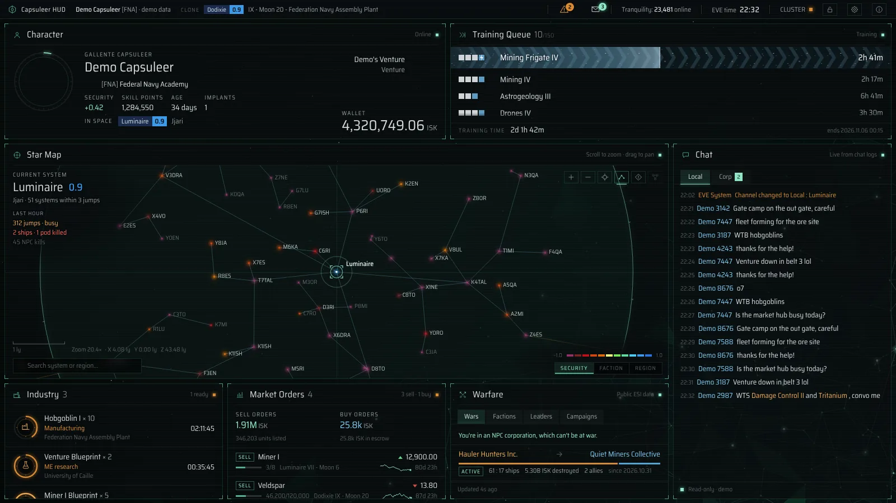
EVE HUD in demo mode (npm run demo): sample data, no login.
Getting started
Install it and log in with EVE Online.
Quick start
Run it: install the app (see
Build the installer), or from the project folder (a clone
of the repository) with Node.js 20+: npm install, then npm start.
npm run demo shows sample data without a login. To see it before installing
anything,
try the demo in your browser.
First start: start fresh, or import an existing EVE HUD folder (see
First start).
Log in: click LOG IN with EVE Online. The login opens in
your default browser; when it says you're logged in, close the tab and EVE HUD updates. The
character comes from the login, so there is no character ID to configure. No developer
account is needed: EVE HUD logs in through the EVE HUD application (see
The EVE HUD application).
Optional, your own EVE application:
clicking Use your own EVE developer client credentials instead on the login screen
opens a form with the Callback URL and the scopes to enable on
https://developers.eveonline.com (each with a
Copy button), and fields for its Client ID and
Secret Key. ← Back to the EVE HUD login returns to the login.
The application's Callback URL must be exactly the one shown
(http://localhost:4747/callback), because EVE only returns to that exact
URL. If 4747 is taken on that computer, type another port in the form (it says whether a
port is free); EVE HUD moves there when you save, and Copy copies the URL with
that port. See Port 4747 callback.
Every scope in config.json must also be enabled on the application,
otherwise the login fails. See Scopes.
The Secret Key is optional: without it EVE HUD logs in the same way as with the EVE HUD
application (PKCE).
Save and continue stores them (encrypted) in the app's
config.json and takes effect at once. Settings → Account →
Reset EVE HUD removes them, and the login goes through the EVE HUD application
again.
The EVE HUD application
Every program that logs in to EVE Online needs an application on developers.eveonline.com.
EVE HUD has one built in, so you don't need a developer account:
Its Client ID is public and part of the app. There is no Secret Key: the login uses
PKCE, a one-time code EVE HUD makes for every login. EVE hands the tokens
only to the copy of EVE HUD that started that login.
The tokens go straight from login.eveonline.com to EVE HUD on your computer and
are stored there, encrypted, in data/tokens.json. They never pass through
danisxlab or any other server (see Data and privacy).
Its Callback URL is http://localhost:4747/callback, so it only works when EVE
HUD runs on port 4747 (the default). On another port, use your own EVE application (see
Port 4747 callback).
EVE's login page shows the application's name and the permissions (scopes) EVE HUD asks
for; you approve them there. Settings → Account → Log out removes the
login from this computer.
Which application EVE HUD uses depends only on the Client ID in
config.json. Empty, the PASTE_… placeholder or the EVE HUD
application's own Client ID: the EVE HUD application (a Secret Key is then ignored, and the
port has to be 4747). Any other Client ID: your own EVE application, with or without a Secret
Key. If you already use your own application, EVE HUD keeps using it.
First start
The app keeps config.json and data/ in its own folder (see
Where the files are), for npm start and the
installed app alike. The first time it starts there is none yet, so it asks:
Import from folder… pick an existing EVE HUD folder, for example a backup or
one from another computer (the folder with config.json and
data/; picking its data folder works too). It copies:
config.json (scopes, refresh timings…, and your own application's Client ID and Secret Key, if any)
data/tokens.json — your EVE login, so you don't have to log in again
data/universe.json + data/typenames.json — the star map and
item names, so nothing is downloaded again
data/settings.json + data/settings-demo.json — layout and
appearance
data/names.json — the name cache
Files are copied as they are; their contents are never shown or logged. The originals stay
where they were. On the first load the app encrypts the login (and your own application's
Client ID and Secret Key, if any) in its copies (see
Privacy). Values encrypted on another computer
can't be read: EVE HUD then shows the EVE login again (and says so when your own
application's Client ID and Secret Key couldn't be read).
Start fresh creates config.json from
config.example.json, and the EVE HUD window shows
LOG IN with EVE Online (see Quick start).
Quit leaves without creating anything.
Later, Import from an existing HUD folder… (tray / Settings menu) does the
same again, replacing the app's files, and restarts the app.
Moving to another computer: the encrypted values only work on the computer (and user account)
that saved them. Copy data/ (layout, star map) and on the new computer log in again
(and enter your own application's Client ID and Secret Key again, if you use one); EVE HUD asks
by itself.
Using EVE HUD
The top bar, the modules, the star map, chat and combat.
Using EVE HUD
Top bar, from left to right:
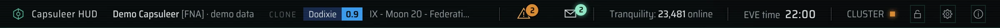
The top bar (demo data).
your character and corporation ticker;
your clone: the system (with its security status) and station where
your medical clone is, i.e. where you wake up if you get podded. Hover it for when the
home station was set, how many jump clones you have, and your last clone jump;
the triangle: alerts and EVE notifications in one icon, always visible.
It's blue; with something new it lights up with a count badge (alerts + new
notifications), and it turns amber when an alert needs your attention. It blinks once
when the count goes up.
Alerts are worked out from data EVE HUD already has, with no
extra ESI calls:
skill queue empty, or ending within 24 hours; unallocated skill points (blue);
industry jobs ready to deliver;
market orders expiring within 2 days.
Switch each kind on or off under Settings → Top bar alerts. An alert
that's on keeps its data updating even while its module (Training Queue, Industry,
Market Orders) is hidden. Your freelance jobs and campaign objectives are in
Warfare → Campaigns.
New notifications are the ones that arrived
since you last opened the box. Keeping it open for a moment marks
them as seen, and the count drops when it closes; a quick pass over the icon
doesn't count.
Why not ESI's own read flag? It isn't updated when you read notifications in
EVE's notification panel, so everything would stay "unread" forever.
EVE HUD remembers what you've seen in data/settings.json. On the
first run, existing notifications count as seen.
Some of what EVE pops up, such as skill training completed, comes from the game
client and never reaches ESI, so it can't appear here.
Hide types you never want to see with
"notifications": { "ignoreTypes":
["NPCStandingsLost"] }
in config.json. The exact type names are listed in
data/debug/notifications.json (with debugDumps on).
Source: /notifications (scope
esi-characters.read_notifications.v1). ESI caches notifications for
about 10 minutes.
the mail icon (envelope), with a green count badge when there's unread
mail; it blinks once when the count goes up. Hover it for "No unread mail", or
how many unread mails there are per label. Source: /mail/labels (counts
only, never contents; scope esi-mail.read_mail.v1). EVE has no smaller
permission for this: the scope would also allow reading mail, which EVE HUD never does. Hide it with Settings →
Appearance → Show the mail icon in the top bar.
ATTACK (only while you're in combat, from EVE's game log; see
Combat);
players online;
EVE time;
CLUSTER light (Tranquility shows "–" while its status is
unknown): green when Tranquility is online (ESI /status) and every ESI
route EVE HUD uses is OK; amber in VIP mode (only CCP/Fenris Creations can log in) or when ESI reports
one of those routes as slow, recovering or down; red when Tranquility doesn't answer;
grey until it's known. Hover it for players, server version, uptime and which routes
have trouble;
Industry, Market Orders and Warfare (demo data).
What each module shows: Modules. Module lights: the small light in each module's header. It shows the
module's own state (e.g. Online, Training, jobs ready, chat log found) and turns
amber when an ESI route the module uses is slow or recovering,
red when one is down, according to ESI's health page (GET /meta/status, checked every 1–5 minutes). Hover it to see which route. Each module's routes are listed
in FEED_ROUTES in hud/lib/feeds/health.js.
"EVE HUD stopped working": EVE HUD's server runs inside the app.
If it stops answering, a red window says so after a few seconds, with a link to the log
file, Restart and Close EVE HUD. (If the page itself can't
be loaded, the app shows the same choices in a system dialog.)
Move a module: drag its header. Modules snap to the grid (4×4 by default).
Resize: drag a module's left or right edge, its bottom edge or a bottom
corner.
Swap two modules: drop one onto another. The teal outline shows where the
dragged module lands, and the blue outline shows where the other module goes. Modules of
different sizes can swap if the other one fits in the space you leave. A red outline
("Occupied") means the drop is impossible: it would cover two or more modules, or
the other module doesn't fit.
Show a module: tick it under Settings → Modules. It goes into the first
free cell. When the grid is full, the settings close and a bar asks you to
click the module it should replace: the new module takes that module's cell
and size, and the replaced one is hidden (tick it again to bring it back, the same way).
Esc, Cancel or a click outside the modules cancels.
Lock the layout: use the padlock in the top bar, so you don't move things
by accident.
Settings pane
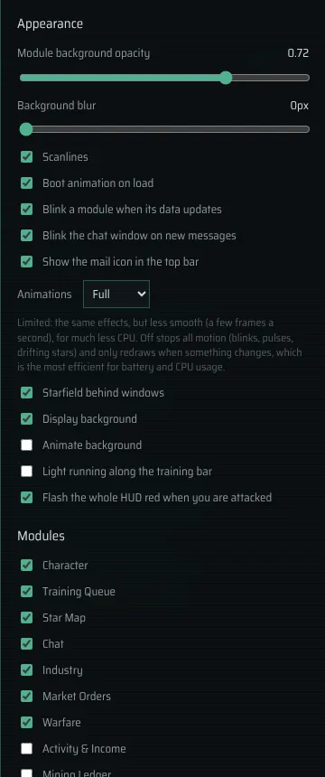
The settings pane (gear icon in the top bar).
Press Esc or click outside to close it.
Module background opacity (default 0.72): how much of the
background (starfield, plexus) shines through the modules, from 0 (see-through) to 1
(solid). The cheap way to tone the moving background down.
Background blur (default 0 = off): a frosted-glass blur behind the
modules. It's the most expensive effect while the background moves: the graphics
card has to blur every module again for each frame of the plexus and starfield. At 0
it's switched off completely, which (measured on a Mac with the background animating)
takes about a third off the CPU of the GPU process and most of its GPU time. The
smaller blurs follow the same setting: the top bar and its hover boxes, the star
map's search, legends and buttons, and the chat's item window.
Display background: a low-poly constellation mesh background, busiest
in the bottom-right corner and fading out towards the top left. It has a little
depth: near points are bigger and brighter and drift a bit more, far ones are dimmer,
and each triangle is shaded by its slant, lit from the top left.
Animate background (off by default, because a moving background
costs a game on the other screen many frames a second): the points wander slowly, so
lines and triangles connect and disconnect, each fading in and out over about three
seconds, and every triangle glows and dims on its own slow rhythm; a few are a
deeper green or a pale mint. It redraws 25 times a second (24 with Animations:
Limited); switched off, or with Animations: Off, it stands still and costs nothing.
Update blink: a module's frame blinks twice, like at start-up, when
its data actually changes; the content stays visible. Each module blinks at most
once every 8 seconds, so busy feeds like Local chat don't strobe.
Flash the whole HUD red when you are attacked (on by default): see
Combat.
Blink the chat window on new messages: a separate switch, so you
can keep the other modules blinking while chat stays calm.
Animations:
Full (default): everything moves smoothly, at up to 25 frames a second.
Only with Full, data changes animate too: bars ease to their new length
with a bright head on the moving edge; a new row (an ore in the Mining Ledger, a
killmail, a wallet source) fades in while the rows below glide down; switching a
tab inside a module fades the content out and brings the new content in with one
soft half blink; the Activity & Income line pulses twice when it changes;
the wallet balance counts up or down, flashing green (ISK in) or red (ISK out)
and fading back to white, with a scan line across the wallet chart; a new
location slides in under a soft fade, a new ship drops the old one out of view
and blinks in; and stars drift and twinkle inside the training progress bar.
With Light running along the training bar switched on (off by
default), a light also runs along the bar's fill and its edge blooms white for a
moment, then fades.
Limited: the same effects, but less smooth (about 10 frames a second,
CSS animations in steps). Much less CPU.
Off: no motion at all; EVE HUD only redraws when something changes
(and counts its countdowns once a second). The least CPU and battery.
Whatever the setting, EVE HUD pauses while its window is minimised or completely
hidden (not when another app, like EVE, has the focus).
Modules: show or hide each module. A shown module goes into the first
free spot.
Grid: columns, rows, gap. Reset layout restores the default
arrangement. Replay boot animation does what it says.
Updates:Check GitHub for new versions (once an hour), on by
default (see Updates).
Combat: seconds without combat before a new attack alert (see
Combat).
Account: which application you're logged in through, and how many of
EVE HUD's permissions (scopes) your login has, with Grant the missing N
(see Scopes). The buttons are Refresh now,
Log in again, Log out and
Reset EVE HUD. After a confirmation window, Reset EVE HUD logs out and
removes your own application's Client ID and Secret Key from config.json,
if any (to switch to another EVE application, or before handing EVE HUD on). Layout,
settings and the star map stay; EVE HUD then shows the login again, through the EVE HUD
application, and goes back to port 4747 if it ran on another one.
ESI API rate limits: the live token balance of each ESI route group EVE
HUD has used.
Everything you change in EVE HUD is saved to data/settings.json automatically.
Window
Two modes, set in config.json and switched with F11, the tray
menu or the Mac's View → Enter Full Screen (each also saves the choice back into
config.json, changing only that value):
"window": { "mode": "normal", "display": "last" }
Key
Values
mode
"normal": a resizable window. Its size, position, monitor and
whether it was maximized (on a Mac: zoomed, e.g. by double-clicking the title bar) are
remembered (data/window-state.json). "fullscreen":
borderless, filling one monitor.
display
Monitor at start-up. "last": where it was last time; on the
very first start the first portrait monitor, else the main one.
"portrait": always the first portrait monitor.
"primary": the main monitor.
Move to monitor (tray / Settings menu) moves the window (in either mode) to
another monitor; it's remembered.
A remembered position on a monitor that's no longer connected is ignored, and the window
opens on the main monitor instead.
The first window: on a portrait monitor 1200×1920, scaled down to fill it; on any other
monitor 1600×900, which fits a 1920×1080 screen without covering the taskbar or Dock
(smaller screens get it scaled down to 90% of their free area, still 16:9). After that, the
size you give it is remembered.
Keys: F11 full-screen on/off · F5 or Ctrl+R reload · Ctrl + / Ctrl − / Ctrl
0 zoom (Cmd on a Mac). Esc still belongs to EVE HUD.
Developer tools (F12 or Ctrl+Shift+I) only work when run from source (npm start), or when the app is started with --devtools. The installed app has none.
Mac menu bar: EVE HUD, Edit, View (Reload and zoom), Settings and Window.
Full screen is the Enter Full Screen item macOS adds to View by itself (or F11).
Closing the window quits the app and stops the server.
Links that leave EVE HUD (zKillboard and the like) open in your default browser.
Tray menu (Windows, Linux) and Settings menu (Mac)
Windows: an icon in the notification area. Left click shows EVE HUD, right
click opens the menu.
Linux: the same menu from a status icon (a click opens
it) on KDE, Cinnamon, Xfce and others, and on GNOME with the AppIndicator extension (Ubuntu
has it built in). The EVE HUD window has it too, as a menu bar that appears when you press
Alt, for desktops without status icons.
Mac: no menu bar icon. The
menu bar has a Settings menu with the same options, next to EVE HUD, Edit,
View and Window. What a Mac has elsewhere already isn't repeated there: Show HUD is the Dock
icon, Reload is View → Reload (Cmd+R), full screen is View → Enter Full Screen (or F11, or the
green button; the mode is saved either way), and Quit is EVE HUD → Quit (Cmd+Q).
Item
Does
Show HUD
Brings the window to the front. (Windows, Linux)
Reload
Reloads the page. (Windows, Linux)
Normal window / Full-screen (F11)
Switches the window mode (saved in config.json). (Windows, Linux)
Move to monitor
Every connected monitor, with resolution; the current one is ticked.
Open config file / Open data folder / Open log file
Opens them. A .json file without an app to open it is shown in Explorer /
Finder instead.
On by default. When it is off, EVE HUD draws with the processor instead, so a game on the other
screen (EVE in Fixed window mode, say) has the graphics card to itself. It
costs some CPU; Settings → Animations → Limited keeps that low. Saved in
app-options.json in the app folder; --no-gpu turns it off
for one start.
Start with Windows (Open at login on a Mac, Start at login on Linux)
Off by default. Only in the installed app; when run from source, it would register Electron
itself. On Linux it adds ~/.config/autostart/eve-hud.desktop (for the
AppImage: the AppImage file where it is, so start it from its final place first).
Restart (Restart EVE HUD on a Mac)
Quits and starts again, e.g. after editing config.json.
Quit EVE HUD
Stops the server and quits. (Windows, Linux)
Modules
Twelve modules: seven on the grid by default, and five optional ones you add yourself. Each one is described below, with a picture from the demo (npm run demo). A module that needs a scope you haven't granted says which (see Scopes).
Hidden by default, because the default 4×4 grid is full. Tick the module under Settings →
Modules: it goes into a free cell, or, when there is none, you pick a module for it to replace
(see Show a module under Using EVE HUD). Each one needs
a scope (see Scopes); without it the module says which.
Values are estimates at CCP/Fenris Creations's average market prices (the game's
"estimated price"). Blueprint copies count as 0, and killmail values don't have
zKillboard's corrections.
Character
Who and where you are, and your wallet. Top left by default, two columns wide.
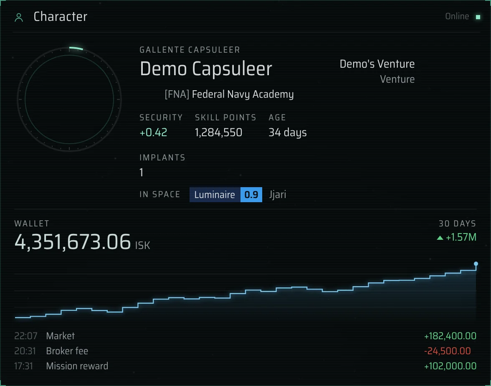
The Character module (demo data).
Part
Shows
ESI source
Portrait
Your portrait in a ring that shows your security status: the longer the ring, the further from 0 (a full ring is ±10); teal above 0, red below.
/characters/{id}, images.evetech.net
Identity
Race, name, corporation and alliance with their tickers and logos; security status, total skill points, age in days and the number of implants.
Docked or in space, the system with its security and region (or Wormhole space), the station when docked, and your ship: its name, type and a render. The header says Online, or Offline · last seen … ago.
/characters/{id}/location, …/ship, …/online
Wallet
Your balance, its change over 30 days with a chart of those 30 days, and the latest three wallet entries.
/characters/{id}/wallet, …/wallet/journal
When the balance changes, it counts to the new value, green for ISK in and red for ISK out; a new location or ship slides in (Animations: Full).
Training Queue
Your skill queue, counting down live. Top right by default, two columns wide.
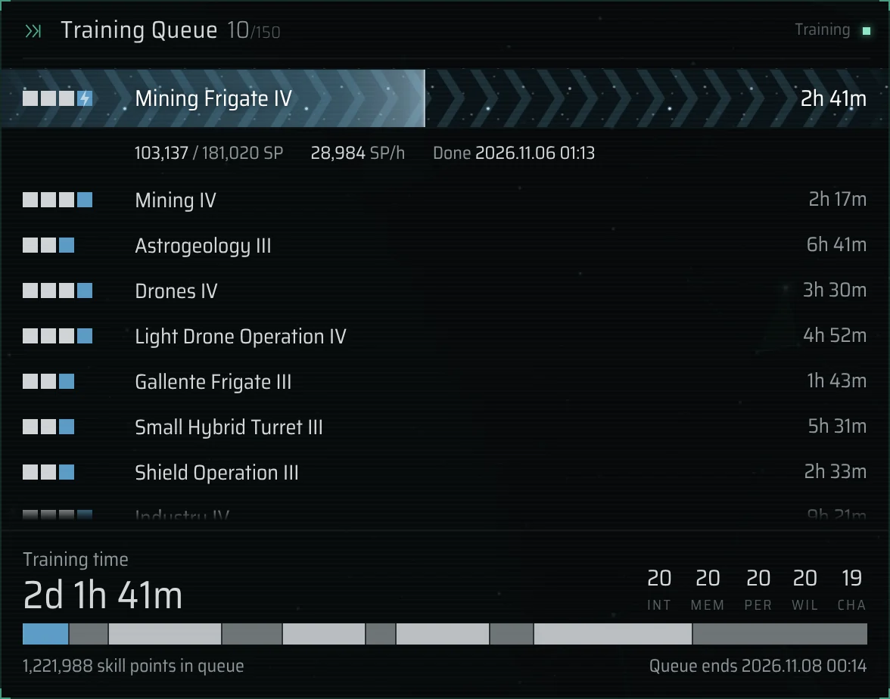
The Training Queue module (demo data).
Part
Shows
ESI source
Header
Skills in the queue (of 150), and the light: Training, Paused (amber) or Idle.
/characters/{id}/skillqueue
Active skill
Its level, name and time left, with a progress fill; under it the skill points of this level, skill points per hour and when it finishes (EVE time).
…/skillqueue, …/attributes
Queue
Every following skill with its level and training time.
…/skillqueue
Footer
Total training time, your attributes (INT, MEM, PER, WIL, CHA), a timeline with one block per skill, the skill points still in the queue and when the queue ends.
…/skills, …/attributes
The top bar's triangle warns when the queue is empty or runs out within 24 hours, and about unallocated skill points (Settings → Top bar alerts).
Light running along the training bar (Settings → Appearance, off by default) sends a light along the active skill.
Star Map
New Eden around you, with search, routes and Set destination, and the hazard overlay. Under the Character module by default, three columns wide and two rows high; it's the one module worth making big.
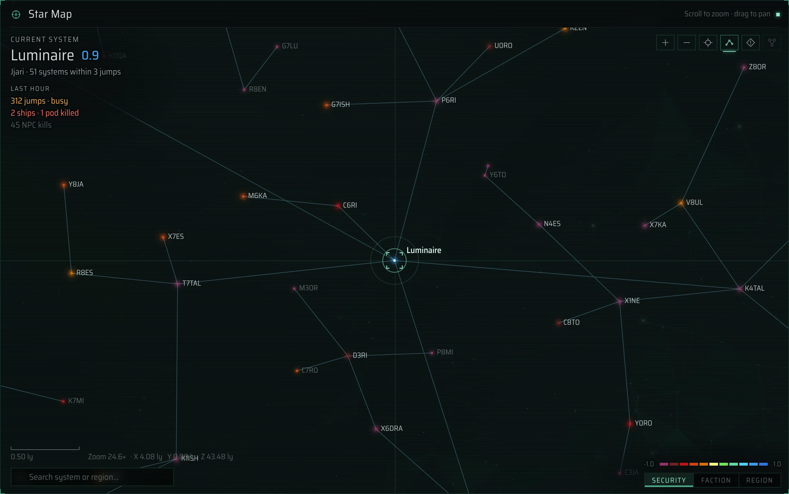
The star map at its first view, centred on your system (demo data).
Under your current system: last hour jumps ("busy" = in the
top 10% of systems) and kills. Player kills show amber, or red at 3 or more. NPC kills
are dimmed. Hovering any system shows the same numbers for it.
These come from /universe/system_jumps and
/universe/system_kills. ESI totals them per hour for every system in one
request, so jumping to a new system costs no extra request. They show the past hour, not
live activity: Local is still the live signal.
At first it shows your own surroundings at 29× zoom, centred on your system (as soon as
your location is known). After that it remembers the view you leave it at. Every login, with
a new or an existing character, centres it on that character's system again.
Scroll to zoom, and drag to pan.
The button (Center on my location) centres the map on your system at
25× zoom; double-click centres it without zooming out.
Search (bottom left, under the zoom level; press / to jump
there): type part of a system or region name and pick a match with the mouse, or with
the arrow keys and Enter.
The system info (top left) and the legend with its colour switch (bottom right) have a
soft dark backdrop, so they stay readable over thousands of systems.
A system: the map zooms to it and marks it with a pulsing white
dot.
A region: the map zooms to fit it and draws a white dotted outline
around it.
Layouts: this works in both the in-game 2D layout and real 3D
positions; switching layouts keeps the result in view.
Clearing: Esc, or clearing the box, removes the highlight (and the
route).
No API calls for the search itself: the names come from the star
map data EVE HUD already has.
Route: searching a system also draws the route from your location
to it, with Set destination. See
Routes below.
Arriving: when you reach the route's destination (flying yourself
or by autopilot), the route box closes, the search clears and the map zooms in on
your new system at 25×.
The green ring marks every system within 3 jumps of you.
The and buttons toggle jump lanes and the hazard overlay.
Colour switch (bottom right, above the legend):
Security, Faction or Region. The
lit-up one is active, and the legend below it changes with it.
Security: the usual -1.0 to 1.0 colour scale.
Faction: who controls each system.
Groups: Amarr, Ammatar/Khanid, Caldari, Gallente, Minmatar,
Thukker, CONCORD/Jove, Pochven, NPC pirate null-sec, player alliances (a shade
per alliance) and unclaimed. The legend counts the systems per group.
Faction Warfare: systems taken by the enemy show the occupier's
colour.
Hover: a star shows the owner, e.g. "Caldari State space ·
occupied by Gallente Federation", or the alliance name.
Region: every region gets its own colour, so you can see where one region
ends and the next begins. The colours have no meaning; the legend shows your current
region's colour, and hovering a star names its region.
The layout button switches between the
in-game 2D map (default) and real 3D positions seen
from above. The 2D layout is CCP/Fenris Creations's schematic position2D, the same one the
game's 2D map draws, so regions like the new-player area look as they do in game.
Distances on it aren't to scale, so the scale bar is hidden there.
Hover over a star for its name, security and region.
Routes
Searching a system on the star map (see Search above) also shows the route to it from where you are:
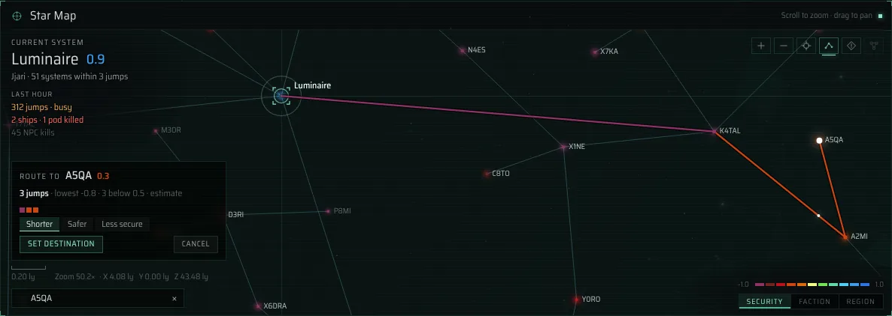
A route on the star map, with the route box and Set destination.
On the map: the route is drawn in the security colour of each system, with
a light travelling along it, and the view zooms to fit the whole route.
Route box (bottom left, above the search box): jump count, the lowest
security on the way, how many systems are below 0.5, and a row of coloured squares, one per
system, like the route bar in the game.
Shorter / Safer / Less secure: the same choices as the game's autopilot
settings. The choice is remembered.
Set destination: sets that system as your in-game autopilot destination and
clears your other waypoints, like Set Destination in the game. It needs the scope
esi-ui.write_waypoint.v1, and EVE must be running with that character logged
in.
When you jump along the route, the rest of it stays as it was. Off the
route (you took another way), it is worked out again from your new system. Your new system
comes from the Local chat log at once; a location from ESI that still says where you were a
few seconds earlier is ignored.
The game's autopilot: ESI can't read a destination or route set in the
game, but EVE's game log names the autopilot's next jump. While the autopilot flies, the map
shows Autopilot → system under your current system and green brackets on that
system. On the route, that next jump gets a green dotted border on both sides, marching
towards the system (still with Animations: Off), so you can tell the autopilot's jump from
the rest of the route. When EVE HUD's route goes another way of the same length, it's worked
out again through that system, so the map follows the way the game flies. A destination set
only in the game isn't shown (the log doesn't name it); set it with
Set destination to see the whole route.
Same length, different way: often several routes have the same number of
jumps (Dodixie to Aunia: through Auvergne, Botane or Agrallarier, all 2 jumps). ESI's route
planner then picks one of them, and the game's autopilot may pick another. Both are equally
short; Set destination only sets the destination, so the game follows its own
choice. Your game's autopilot settings (Shorter / Safer, the security penalty, avoided
systems) also aren't visible to EVE HUD: pick the same choice in the route box.
Source: ESI's route planner (POST /route/{origin}/{destination}), the same as the game's. In demo mode, or when ESI can't be reached, EVE HUD works the
route out from the map's stargates and labels it estimate.
Clearing the search removes the route.
Hazard overlay
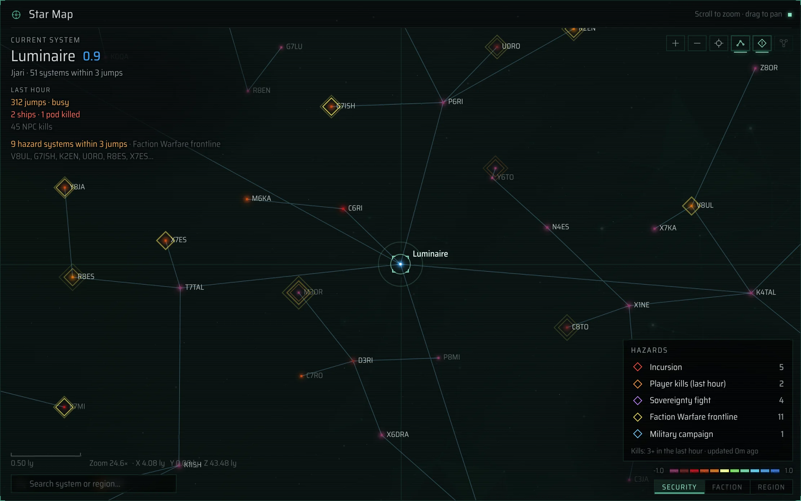
The star map with the hazard overlay (demo data).
The button on the star map switches the hazard overlay on and off. Systems where something
is going on get a pulsing diamond outline. When several things happen in one system, the
diamonds are nested, one per kind of event:
Diamond
Meaning
ESI source
Updates
Red
Incursion: Sansha fleets in the infested systems, including the
staging system
/incursions
about every 5 min
Orange
Player kills: at least hazards.pvpKillThreshold (default
3) ships + pods destroyed in the last hour
/universe/system_kills
hourly (ESI's cache)
Violet
Sovereignty fight: sov structures under attack (null-sec)
/sovereignty/campaigns
about every 5 min
Yellow
Faction Warfare frontline: contested or vulnerable FW systems
/fw/systems
about every 30 min (ESI's cache)
Light blue
Military campaign: systems named in active campaign objectives
/military-campaigns
about every 5 min
Legend: shown in the bottom-right corner of the map while the overlay is
on. It lists how many systems have each kind of event. Click a row to hide or show that
kind; your choice is remembered.
Hover a system to see what's happening there, for example "6 player
kills in the last hour · 4 ships · 2 pods", or how far an FW system is contested.
Warning in the map's top-left corner: it tells you when your current system
has a hazard (red), or how many hazard systems are within 3 jumps, and which ones (amber).
Brightness: the pulse is stronger for bigger events, such as more kills or
a vulnerable FW system.
Military campaigns: ESI doesn't document their location format, so systems
are only shown when the campaign data actually contains them. Raw responses are saved in
data/debug/hazards.json (with debugDumps on).
No location, so not on the map: wars, FW statistics and leaderboards are
about corporations and factions, not systems.
Settings: change the kill threshold under
"hazards" and the refresh timing under
"refresh" → "hazards" in config.json. This
data is public, so it works without logging in.
Chat
Local and Corp chat, and Militia while you're in Faction Warfare, on the right side by default, one column wide and three rows high. Read-only: it comes from the log files EVE writes.
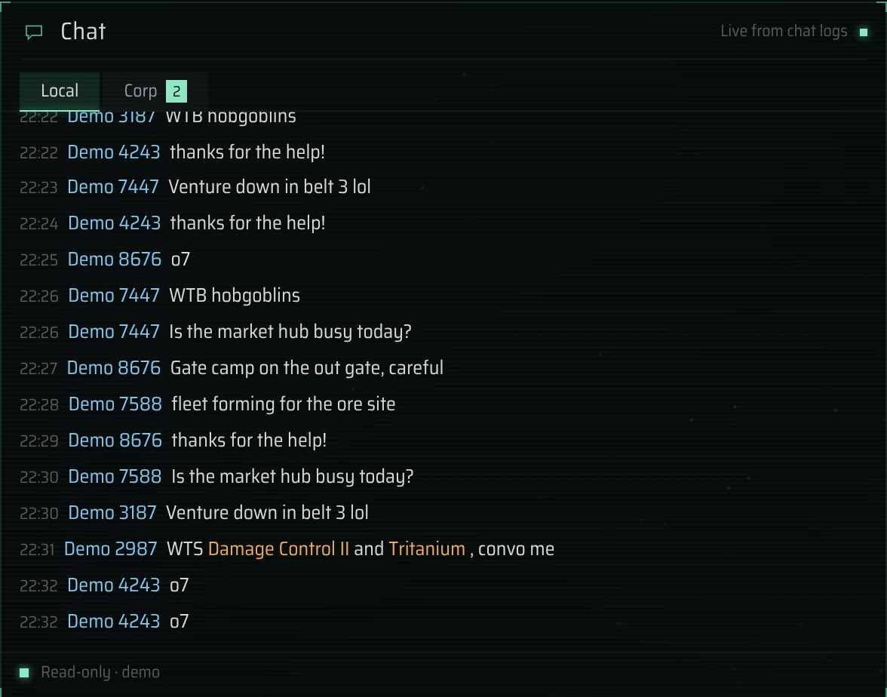
The Chat module (demo data).
Part
Shows
Source
Tabs
Local, Corp and Militia (only while you're enlisted), each with a count of new messages while you look at another tab.
EVE's chat log files; Militia from /characters/{id} (your faction)
Messages
Time (EVE time), sender and text; EVE's own system lines, such as a channel change, in orange. The list stays at the newest message unless you scroll up.
EVE's chat log files
Links
Item and system names in EVE's link orange: click one for what it is (see Item links).
the star map data, then ESI when you click
Chat logs
ESI has no chat API, so chat is read-only. It's read from the log files EVE
writes:
macOS / Linux:~/Documents/EVE/logs/Chatlogs, detected
automatically. On Linux the Steam (Proton) folders are checked too, for Steam installed
normally or as a Flatpak.
Windows:Documents\EVE\logs\Chatlogs, including OneDrive
Documents.
Requirement: in EVE,
Settings → Chat → Log chat to file must be on. It is by default.
Tabs: Local and Corp, plus Militia while you're enlisted
in Faction Warfare (from your character's public info on ESI; it appears or disappears
within a few minutes of enlisting or leaving).
Other locations: Settings → Storage → EVE logs:
Browse… to EVE's logs folder (the one with Chatlogs and Gamelogs in
it), then Use this folder. Choosing Chatlogs or
Gamelogs itself works too: the logs folder above it is saved. It applies at
once (no restart) and is saved as "eveLogDir" in
config.json. Use the default folder goes back to the usual
place. The line under it says which folder is being read, or what can't be reached.
More tabs: add entries to "chatChannels", using the
start of the log file name. For example,
{ "id": "fleet", "label": "Fleet",
"filePrefix": "Fleet" }
reads Fleet_20261029_….txt.
Which file is used: when you have several characters, EVE HUD picks the log
files of the logged-in character. Newer EVE clients put the character ID at the end of each
file name.
New sessions: after relogging, the new log file is picked up within 5
seconds.
EVE runs on another computer: EVE HUD needs to read the log files while you
play, so share that computer's Documents\EVE\logs folder on your network
(read-only is enough) and point Settings → Storage → EVE logs at it with Browse…: a UNC
path such as \\gamepc\evelogs on Windows (type it in the folder window's address bar); on the Mac connect to it in Finder
(Go → Connect to Server, smb://<pc-name>/evelogs, optionally under System
Settings → General → Login Items so it reconnects) and choose /Volumes/evelogs.
EVE HUD polls the files, so a network share works like a local folder. A copied-over folder
works too, but it won't update.
Item links
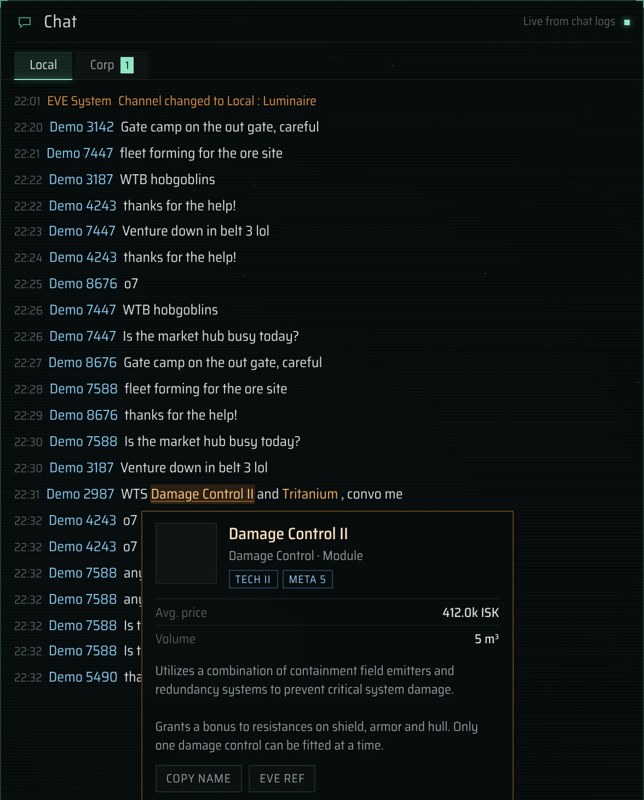
Clicking an item link opens its window (demo data).
What you see: item and system names show in EVE's link orange. Clicking one
opens a small window at the link with what it is, its group, tech and meta level, average
market price, volume and description. Systems show security and region, plus
Show on map, which centres the star map on them and marks them with orange
brackets. Clicking anywhere outside the window, or pressing Esc, closes it.
How names are found: EVE's log files keep only the plain text of a link,
not the link itself (checked against real logs). So EVE HUD recognises names using CCP/Fenris Creations's
item list from the static data:
Names of two or more words, like Medium Core Defense Field Extender II, are
matched anywhere, with exact spelling and capitals.
One-word names, like Tritanium or Jita, only when they stand on their
own: the whole message, or set apart by the double space EVE writes around a linked
name. So a casually typed "water" stays plain.
The longest name wins: Exequror Navy Issue Intaki Syndicate SKIN rather than
Exequror Navy Issue.
Character and corporation names can't be recognised this way, because there's no list of
them.
Data: item names are saved to data/typenames.json during the
star map download (from types.jsonl and groups.jsonl). Details
come from public ESI routes when you click, with no extra scopes:
/universe/types, /universe/groups,
/universe/categories and /markets/prices.
Industry
Your industry jobs, counting down. Bottom row by default.
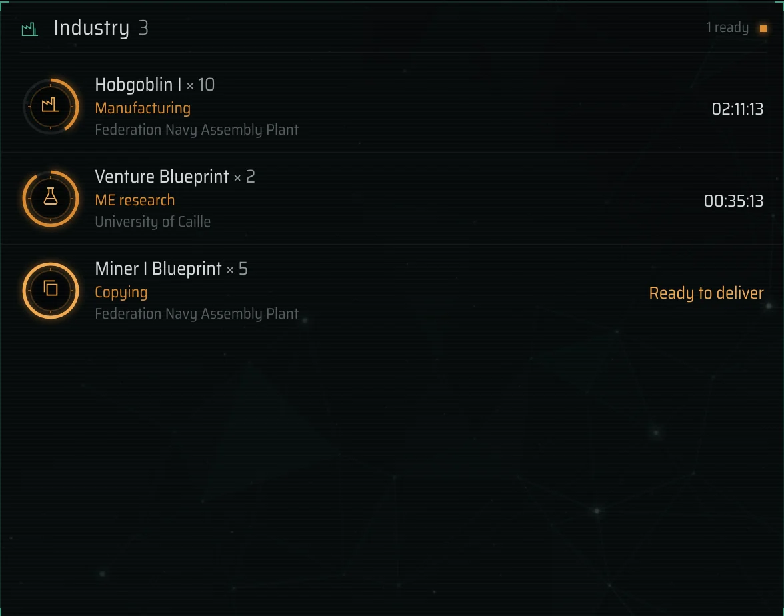
The Industry module (demo data).
Part
Shows
ESI source
Header
The number of jobs, and N running, or N ready with an amber light when jobs are done.
/characters/{id}/industry/jobs
Jobs
A progress ring with the activity's icon, the product and number of runs, the activity (manufacturing, ME or TE research, copying, invention, reverse engineering, reactions), the time left, Paused or Ready to deliver, and the facility.
…/industry/jobs
The top bar's triangle also says when jobs are ready to deliver (Settings → Top bar alerts).
Market Orders
Your open sell and buy orders, with the price history of each item. Bottom row by default.
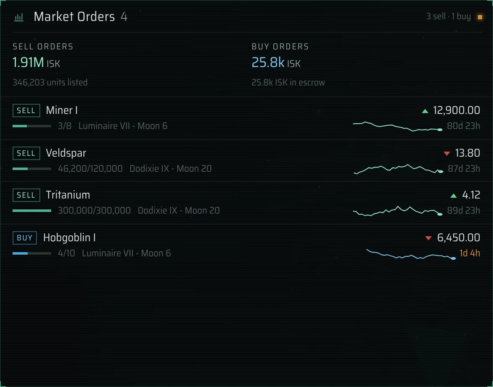
The Market Orders module (demo data).
Part
Shows
ESI source
Totals
The value of your sell orders and buy orders, the units listed for sale and the ISK held in escrow.
/characters/{id}/orders
Orders
Sell orders first, then buy orders, each by expiry: SELL or BUY, the item, your price with ▲ when it's better than the 7-day regional average (above it for a sell, below it for a buy) or ▼ when it's worse, a bar with the volume left, the station, a 30-day price line and the time left (amber under 2 days).
…/orders, /markets/{region}/history (up to 24 items)
The top bar's triangle also warns about orders that expire within 2 days (Settings → Top bar alerts).
Warfare
Conflict information that has no map location, plus your own freelance jobs and campaign
objectives. It's in the bottom row by default. A wider module (2 columns) shows more at once.
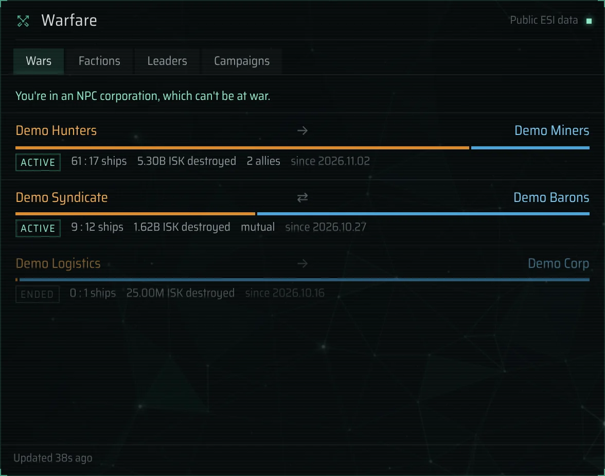
The Warfare module, Wars tab (demo data).
Tab
Shows
ESI source
Wars
The 15 most recent wars: aggressor → defender (⇄ for mutual), ships killed and ISK
destroyed per side (amber bar = aggressor, blue = defender), allies, and active or
ended. Wars involving
your corporation or alliance are highlighted in amber, and the module
header warns you. NPC corporations can't be at war, which the tab tells you too.
/wars, /wars/{id}
Factions
Who's at war with whom, and per faction: systems controlled, pilots, kills today and
this week, and victory points this week. Your own status (enlisted, rank, weekly kills
and VP) appears when the esi-characters.read_fw_stats.v1 scope is
granted.
/fw/stats, /fw/wars, /characters/{id}/fw/stats
Leaders
Top factions, corporations or pilots by kills or victory points, for yesterday, last
week or all time (top 10).
/fw/leaderboards, …/corporations, …/characters
Campaigns
Your freelance jobs and military campaign objectives (progress, your
share, end time, reward), incursions per constellation (state, influence, staging
system, mothership) and military campaigns (state, progress, end time).
The module remembers the chosen tab and leaderboard options. It refreshes every 10–60 minutes
(refresh.warfare in config.json). The footer shows when it last
updated, and whether any source was unavailable; hover that note for details.
Wars caveat: ESI has no "wars of my corporation" route, so EVE HUD
only checks the 15 most recent wars. A war declared longer ago won't be flagged.
Activity & Income
Where your ISK came from and went. Optional: tick it under Settings → Modules.
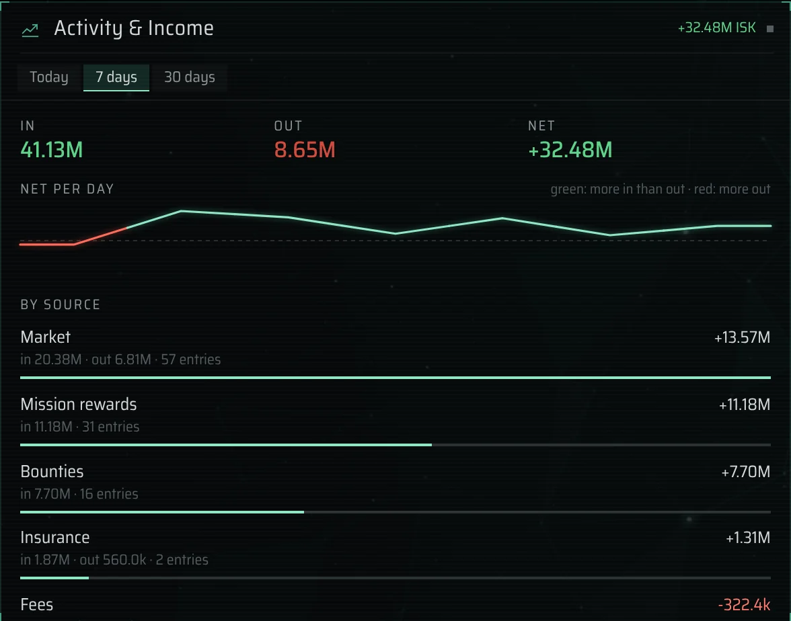
The Activity & Income module (demo data).
Part
Shows
ESI source
Period
Today, 7 days or 30 days: ISK in, out and net, and a line of the net per day (green when more came in than went out, red otherwise).
Mission rewards, bounties, market, insurance, contracts, industry, planetary, LP store, rewards, transfers, fees and other, each with what came in and went out and the number of entries. Mission rewards per agent, bounties per system.
…/wallet/journal
Loyalty points
Your loyalty points per corporation.
/characters/{id}/loyalty/points
Mining Ledger
What you mined, and where. Optional: tick it under Settings → Modules.
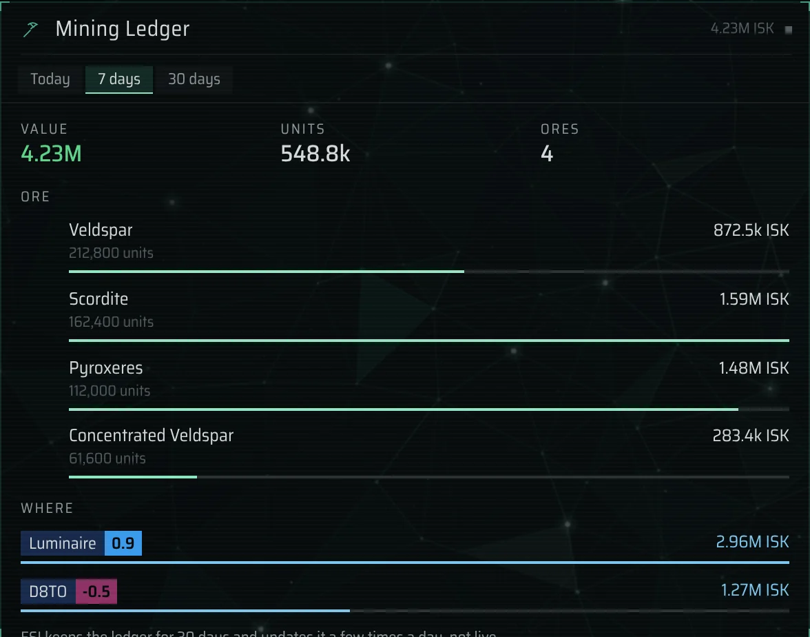
The Mining Ledger module (demo data).
Part
Shows
ESI source
Period
Today, 7 days or 30 days: the value, units and number of ores, with a bar per day.
/characters/{id}/mining, /markets/prices
Ore
Per ore: units and value.
…/mining
Where
Per system, with its security: the value mined there.
…/mining
ESI keeps the ledger for 30 days and updates it a few times a day, not live.
Ships & Assets
Your ships, and what everything you own is worth. Optional: tick it under Settings → Modules.
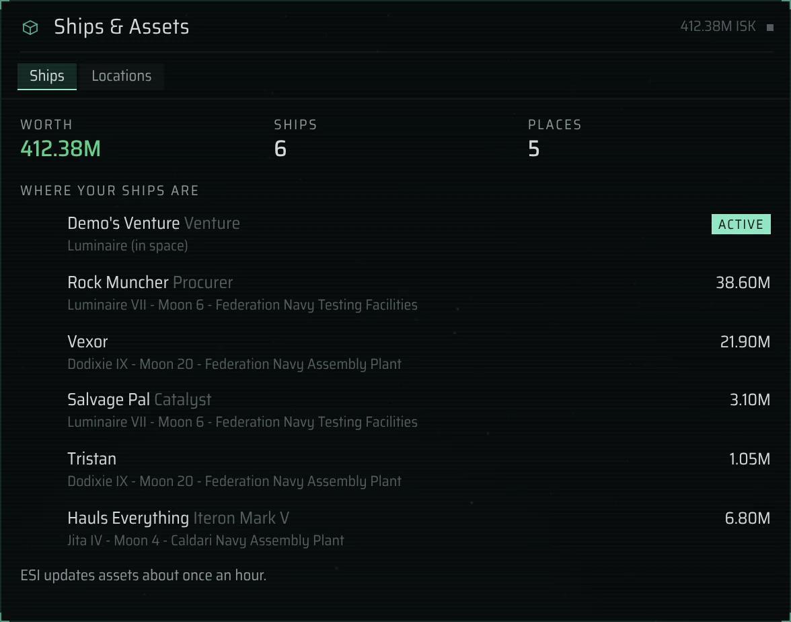
The Ships & Assets module (demo data).
Part
Shows
ESI source
Totals
The worth of everything, the number of ships and the number of places.
/characters/{id}/assets, /markets/prices
Ships
Every ship you own and where it is (also inside a carrier's ship hangar), with its custom name and value including fitting and cargo; the ship you're flying is marked active.
The most valuable places, with item and ship counts.
…/assets
ESI updates assets about once an hour.
Standings
How the factions, NPC corporations and agents see you. Optional: tick it under Settings → Modules.
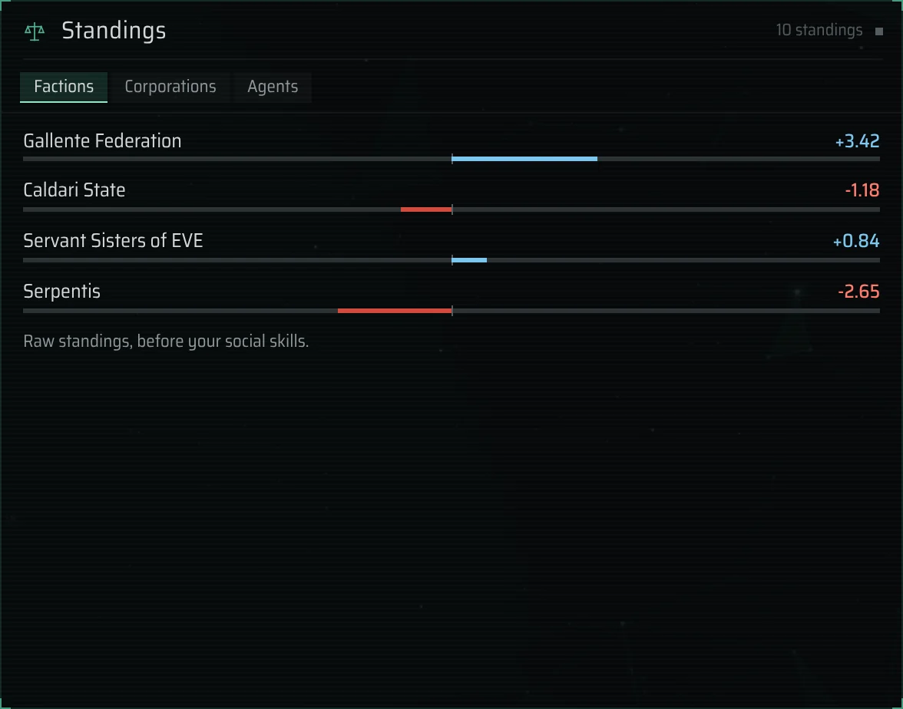
The Standings module (demo data).
Part
Shows
ESI source
Factions, Corporations, Agents
Each standing from +10 (blue) to -10 (red). Raw values, before your social skills.
/characters/{id}/standings
Kills & Losses
Your killmails of the last 30 days. Optional: tick it under Settings → Modules.
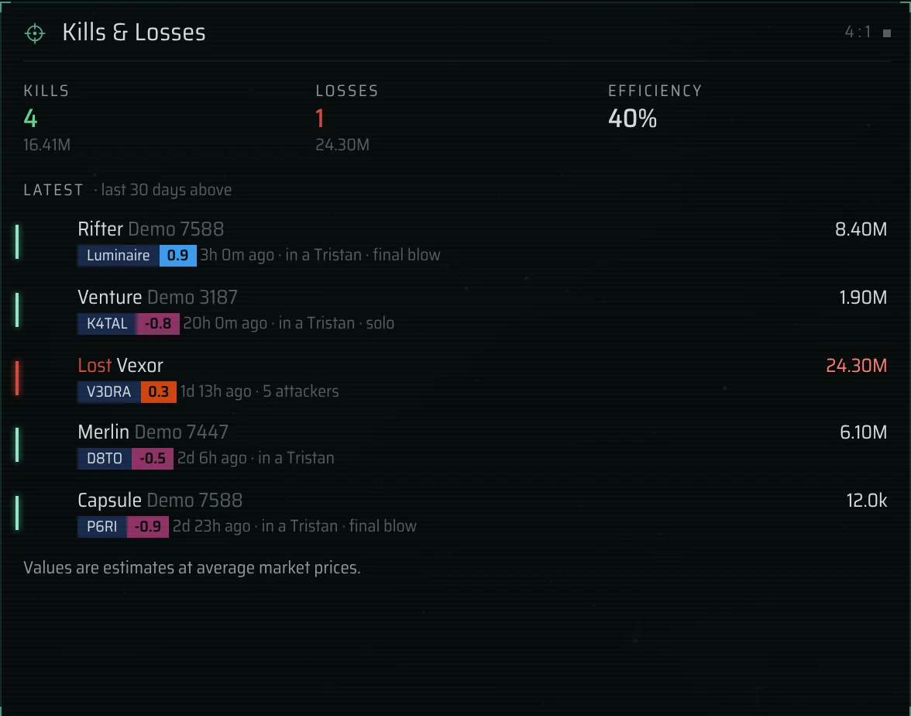
The Kills & Losses module (demo data).
Part
Shows
ESI source
Summary
Kills and losses, ISK destroyed and lost, and ISK efficiency for the last 30 days.
/characters/{id}/killmails/recent
Latest
The latest 40 killmails: the ship and victim (losses in red), the system with its security, when, and the value. Clicking one opens it on zKillboard.
/killmails/{id}/{hash} (fetched once, kept in data/killmails.json)
zKillboard only has killmails someone shared with it: when it shows a 404, hover the row, click Copy killmail link (the official EVE link) and paste it on zKillboard's Post page. Logging in on zKillboard with your character once lets it fetch all your killmails itself.
Combat (ATTACK)
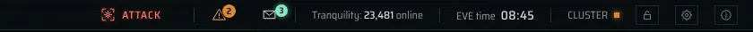
ATTACK in the top bar while you're in combat.
ESI has no combat data either, so combat comes from EVE's game logs, in
Gamelogs next to Chatlogs (it follows the
EVE logs folder in Settings → Storage).
Start: the first new (combat) line (damage done or taken,
misses, scrams…; remote reps and capacitor transfers don't count) shows
ATTACK in the top bar, before the notifications, and the whole EVE HUD window flashes
red for about a second (a blink, a quick fade to red, 0.5 s red, a fade back).
End: no (combat) line for 15 seconds; ATTACK blinks once and
fades out. Change the wait in Settings → Combat (5 to 120 seconds); it's
saved as "combatIdleSeconds" in config.json.
Red flash: Settings → Appearance →
Flash the whole HUD red when you are attacked (on by default) switches it off;
ATTACK still shows. With Animations: Off the red flash and the blinks are skipped too.
Which lines count: only lines EVE writes while EVE HUD runs, in the newest
game log (the logged-in character's, when the file name has the character ID).
Can't read the game logs: a window over all of EVE HUD says why (folder
missing, network share not connected, or on a Mac no permission for Documents or network
volumes) and asks for EVE's logs folder: choose it with Browse…, then
Use this folder. Under the field are the usual places: Windows
C:\Users\<you>\Documents\EVE\logs (or under OneDrive), Mac
/Users/<you>/Documents/EVE/logs.
It appears only after the folder has been unreadable for 6 seconds, so a short network
hiccup or macOS's own permission question comes first. When started with
npm start, the app is called Electron as far as macOS is concerned,
so macOS asks again for that one.
Exit closes it until the next start; EVE HUD then runs without combat
alerts. It also closes by itself when the folder can be read again (for example a
network share that reconnected).
Updates
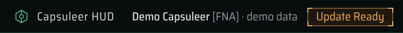
Update Ready in the top bar.
When a newer EVE HUD version is available on GitHub, an orange Update Ready button appears in
the top bar, next to your character's name. It opens a window over the (blurred) EVE HUD window with the
new version's release notes and Get EVE HUD <version>, which opens the
release page in your browser, where you download it like the first time. The window also opens
by itself once for each new version; Later or Esc closes it, and the
button stays until you've updated.
EVE HUD asks GitHub at start and then once an hour. It never downloads or installs anything
itself, and sends nothing about you (see
Privacy).
Settings → Updates → Check GitHub for new versions turns it off.
About (the i button) shows your version and the commit it was
built from in its bottom-right corner, e.g. v1.0.3_83fa76b.
Configuration
config.json, where the files are, and how often EVE HUD asks ESI.
Configuration reference (config.json)
config.json is in the app folder (Where the files are; tray / Settings menu → Open config file). If you use your own EVE application it holds
its Client ID and Secret Key (encrypted), so keep it private. Keys starting with _ are help
text and are ignored. Restart the app after editing (tray / Settings menu → Restart).
Key
Default
Meaning
clientId, clientSecret
(none)
Only for your own application on developers.eveonline.com; empty (or the
PASTE_… placeholders, or the EVE HUD application's own Client ID) means
EVE HUD logs in through the EVE HUD application, and a Secret Key is then ignored. Entered in the login screen's
Use your own EVE developer client credentials instead form, which writes them
here encrypted ("enc:…"); the Secret Key is optional.
Reset EVE HUD clears them. A plain value typed in by hand is encrypted at the
next start. The secret is never sent to the page or written to the log.
port
4747
Local port of EVE HUD.
callbackUrl
http://localhost:4747/callback
Your own application only: must match the developer portal exactly, and use the same port. The EVE HUD application always uses http://localhost:4747/callback.
scopes
see file
ESI permissions requested at login. After changing them, use Log in again in
Settings. A module whose scope is missing tells you which one it needs.
compatibilityDate
2026-08-18
ESI version date, sent as the X-Compatibility-Date header. Response
formats are frozen at this date. Only move it forward deliberately. Every route EVE
HUD uses exists at this date; changes it brought: /sovereignty/map →
/sovereignty/systems, the route planner is
POST /route/{origin}/{destination}, and military campaign lists are
wrapped objects.
min / max seconds per feed, and an optional
"enabled": false.
rateLimit.reserve
0.25
Fraction of each ESI rate-limit group's tokens that is never used (0.25 = 25%).
rateLimit.maxWaitSeconds
15
Longest a request may wait for tokens. Beyond that, the feed keeps its last data and
tries again later.
hazards.pvpKillThreshold
3
Minimum player kills (ships + pods) in the last hour for an orange hazard diamond.
notifications.ignoreTypes
[]
Notification types to hide completely (case-insensitive), e.g.
["NPCStandingsLost"].
window.mode
"normal"
"normal": a resizable window that remembers its size, position
and monitor. "fullscreen": borderless, filling one monitor.
F11, the tray menu and View → Enter Full Screen on a Mac change it (and save it here).
window.display
"last"
Monitor at start-up: "last" (where it was last time; on the
very first start the first portrait monitor), "portrait" or
"primary".
debugDumps
false
true saves the last raw answers from ESI in data/debug/, for
finding out why a module shows something odd (see
Where the files are). They can hold your industry
jobs and notification types, so look through them before you share one. Off, nothing
is written and older debug files are removed at the next start.
eveLogDir
"" (auto-detect)
EVE's logs folder (the one with Chatlogs, Gamelogs,
Fleetlogs, Marketlogs), if auto-detection doesn't find it,
or a network share. Easiest to set in Settings → Storage → EVE logs (there only
with Browse…). An
older chatLogDir (a Chatlogs folder) still works; saving in
Settings replaces it.
chatPollMs
1000
How often the chat log files are checked, in milliseconds. Reads local files only,
never ESI.
combatIdleSeconds
15
Seconds without a (combat) line in the game log before ATTACK goes off
(5–300; Settings → Combat offers 5–120).
chatChannels
Local, Corp, Militia
Chat tabs: id, label, and filePrefix (the start
of the log file name). "fw": true shows the tab only while
you're enlisted in Faction Warfare. Militia is always added, even to an older
config.json.
Scopes
config.example.json lists every scope EVE HUD can use. The login asks EVE for the
scopes in yourconfig.json; EVE only shows its approval screen
when that list has something new.
Grant access: a module whose scope is missing says which one and has a
Grant access button (Settings → Account has Grant the missing N). It adds
the scope to config.json (one line, nothing else touched) and starts the login,
so EVE asks you to approve it.
Your own application: tick it on the developer site too. Every scope in
config.json must also be enabled on your application at
developers.eveonline.com. If one isn't, EVE refuses the login and EVE HUD says so. The EVE
HUD application has all of EVE HUD's scopes enabled already.
Mail icon (the unread count; the scope also covers reading mail, which EVE HUD doesn't
do), notifications in the triangle
esi-characters.read_loyalty.v1
Loyalty points (Activity & Income)
esi-industry.read_character_mining.v1
Mining Ledger
esi-assets.read_assets.v1
Ships & Assets
esi-characters.read_standings.v1
Standings
esi-killmails.read_killmails.v1
Kills & Losses
esi-ui.write_waypoint.v1
Set destination on the star map (the only scope that changes something in the
game)
Where the files are
Windows
macOS
Linux
config.json and data/ (default)
%APPDATA%\EVE HUD
~/Library/Application Support/EVE HUD
~/.config/EVE HUD
Log file
%APPDATA%\EVE HUD\logs\eve-hud.log
~/Library/Logs/EVE HUD/eve-hud.log
~/.config/EVE HUD/logs/eve-hud.log
The app
the folder chosen in the installer (default:
%LOCALAPPDATA%\Programs\EVE HUD for Only for me,
C:\Program Files\EVE HUD for everyone)
wherever you put EVE HUD.app
the .AppImage file wherever you put it, or /opt/EVE HUD from
the .deb
The tray menu (Settings menu on a Mac) opens all of them (Open config file / Open data
folder / Open log file).
Other folders: Settings → Storage in EVE HUD shows the folder
for each, chosen with Browse…: Settings (config.json) and
Data (data/). Move and restart restarts the app and
moves the files before EVE HUD starts again: it copies them, checks the copies, records the
new place in location.json in the default folder above (which stays put), and
then removes the old ones. A folder that already has a config.json, or a data
folder that isn't empty, is refused, so nothing gets overwritten.
Use default folders moves them back. Folders that sync to the cloud (iCloud
Drive, OneDrive) work, but bring no benefit: the encrypted login (and your own Secret Key, if
any) only work on this computer.
With --data-dir (or EVE_HUD_HOME) the folders are set by that
option, and EVE HUD shows them without the option to change them.
npm start (run from source) uses the same folder as the installed app.
npm run fresh uses ./.test-home instead, for trying a first start.
The log file is rotated at 1 MB. Before you share it (for example in a
GitHub issue): it has your character name and ID, and folder paths with your computer's
user name. It never has your login tokens or Secret Key.
Files and folders
Path
What it holds
config.json
Settings (reference) and, if you use
your own EVE application, its Client ID / Secret Key, encrypted.
Private.
data/settings.json
Layout, appearance, map view, chosen chat tab. Written by EVE HUD.
data/settings-demo.json
The same for demo mode, kept separate so the demo never changes your live layout.
data/tokens.json
Your EVE login (refresh token), encrypted. Private. Deleting it, or
using Log out, disconnects the character.
data/universe.json
Cached star map and its SDE build number.
data/typenames.json
Item names for the orange chat links, from the same SDE download.
data/names.json
Cache of names for items, systems, stations and structures. Safe to delete.
data/debug/objectives.json
Last raw freelance-job and campaign responses. All data/debug/ files are
only written with "debugDumps": true in config.json.
data/killmails.json
Kills & Losses: summaries of your newest 300 killmails (a killmail never changes,
so each is fetched once). Safe to delete.
data/typecats.json
Item type → category (to spot ships among your assets). Safe to delete.
data/debug/industry.json
Last raw industry job list from ESI, with when it was fetched and when ESI's cache
expires.
data/debug/notifications.json
Last notification list from ESI: type, time, read flag and whether it's ignored (never
the notification text).
data/debug/feeds-status.json
For every feed: last update, next scheduled refresh, and last error. The first place
to look when a module seems stuck (turn debugDumps on first).
data/window-state.json
The window's last size, position and monitor.
location.json
Only when Settings → Storage moved the files: where config.json and
data/ are now. Stays in the default app folder.
app-options.json
Use the graphics card (tray / Settings menu). In the default app folder.
They are in the app folder (Where the files are);
hud/config.example.json is the template for a new config.json. EVE
HUD's Settings drawer and login screen show the actual paths.
The whole data/ folder can be deleted to start fresh: you'll need to log in
again, and the map downloads again.
Start options
For a shortcut to the installed app (e.g. "…\EVE HUD.exe" --demo) or
after npm start --:
Option
Meaning
--demo
Sample data, no login (uses data/settings-demo.json).
--port=N
Another port (the EVE HUD login only works on 4747, your own application only on its
callbackUrl port, so mainly with --demo).
--rebuild-map
Download the star map again (npm run rebuild-map).
--no-gpu
Draw without the graphics card for this start (see Use the graphics card).
--data-dir=PATH
Keep config.json and data/ in PATH.
EVE_HUD_HOME=PATH does the same.
--devtools
Allow the developer tools (F12) in the installed app, for troubleshooting.
Port 4747 callback
The app's server listens on 127.0.0.1 only, on the port from
config.json (4747). Other devices on your network can't reach it. It's there
because EVE's login has to return somewhere: EVE sends your browser to
http://localhost:4747/callback.
It never moves to another port by itself: EVE's login only returns to the exact Callback URL
registered for the application, http://localhost:4747/callback.
The EVE HUD application only works on port 4747. To run EVE HUD on another
port, use your own EVE application and put that port in its Callback URL. If you log in
through the EVE HUD application on another port, the login page shows
The login needs port 4747.
Another port only with your own EVE application: the form for your own
developer client credentials has the port in its Callback URL, and EVE HUD moves there when
you save. Reset EVE HUD brings it back to 4747. When port isn't 4747
and you don't use your own EVE application (for example after editing
config.json by hand), a red window over EVE HUD says The port can only be changed with your
own EVE application, with Open config file and
Restart: change port back to 4747 and restart.
When the port is taken, the app tells you what is using it:
Used by another program (maybe another EVE HUD: a second copy, or one started
with npm start): close it and Try again. With your own
EVE application you can also pick another port: Open config file.
May not be used on this computer (Windows can reserve port ranges for
Hyper-V/WSL; check with
netsh interface ipv4 show excludedportrange protocol=tcp).
With your own application: if you change port, change callbackUrl in
config.json and the Callback URL of your application on
developers.eveonline.com to the same port. The app logs a warning when port and
callbackUrl don't match.
Please note that the port (4747) cannot be changed if you haven't created
your own developer application in the EVE developer portal. Should you change the port in
config.json yourself without your own developer application, EVE HUD can't
log in: it shows the red window above until port is back on 4747.
Refresh timing
Only what's on screen is polled. Every feed declares what shows it: a module,
the top bar, an alert, or a star map option. The app window tells the server what it shows,
and the server polls only those feeds:
Hiding a module pauses its feed. Its last data is kept, so a module you show
again has its data straight away, and showing a module fetches new data at once.
The top bar always counts as visible: players online, location and ship,
character, clone, notifications, and mail (unless the mail icon is hidden in Settings →
Appearance).
Alerts that are on keep the skills, industry or orders feed running even
with that module hidden.
Star map extras: the hazard feed only runs with the hazard overlay on, and
the sovereignty feed only in Faction colouring.
No page open: after 30 seconds (so a reload doesn't pause and restart
everything) only the top bar's feeds keep running.
data/debug/feeds-status.json (with debugDumps on) shows for every feed whether it's
active.
The rule: every ESI response says how long its data is cached (the
Expires header). Each feed requests again just after that moment, so it's as
fresh as ESI allows. Asking earlier would only return the same cached data. The result is then
clamped to the min and max from config.json.
Feed (refresh key)
Feeds these modules
ESI cache (typical)
Default min / max (s)
presence
location, ship, online status (map, character, top bar)
5 s (online: 60 s)
5 / 60
status
players online, CLUSTER light (top bar)
30 s
30 / 120
esihealth
module lights and CLUSTER light (ESI /meta/status)
1 min
60 / 300
skills
training queue, total SP, attributes, skill alerts
120 s
60 / 900
wallet
balance (journal and chart: 1 hour)
120 s
60 / 900
industry
industry jobs
300 s
120 / 900
objectives
your freelance jobs and campaign objectives (Warfare → Campaigns)
varies
120 / 900
orders
market orders (price history: once a day)
1200 s
300 / 1800
character
name, corporation, alliance, implants
1 hour or more
120 / 3600
hazards
star map hazard overlay (public data)
5 min – 1 hour
300 / 1800
warfare
Warfare module (public data, plus your FW status)
5 min – 1 hour
600 / 3600
traffic
star map: jumps and kills in the last hour, for every system
1 hour
600 / 3600
sovereignty
star map Faction colouring: owner of every system (/sovereignty/systems;
with debugDumps on, a sample of the raw answer is saved to
data/debug/sovereignty.json),
Faction Warfare occupation (/fw/systems), faction and alliance names
1 hour
1800 / 3600
clones
top bar: medical clone location (needs esi-clones.read_clones.v1)
2 min
300 / 3600
mail
top bar: unread mail count (needs esi-mail.read_mail.v1)
30 s
60 / 600
notifications
top bar: unread notifications (needs
esi-characters.read_notifications.v1)
10 min
120 / 1800
activity
Activity & Income: wallet journal by source, loyalty points
1 hour (LP: 1 hour)
300 / 1800
mining
Mining Ledger
10 min (ESI updates the ledger a few times a day)
600 / 3600
assets
Ships & Assets
1 hour
1800 / 3600
standings
Standings
1 hour
1800 / 3600
kills
Kills & Losses (each killmail fetched only once)
5 min
600 / 3600
How to adjust:
Poll less often: raise min. For example,
"orders": { "min": 1800, "max": 3600 } checks
orders at most every 30 minutes.
Faster than ESI's cache isn't possible: a min below the cache
time has no effect.
Switch a feed off:"industry": { "enabled": false }.
Countdowns keep running between refreshes: skill training, job timers and
order expiry are computed locally every second, without asking ESI.
Load: about 20–25 ESI requests per minute in normal use, mostly the 5-second
location check. The map extras (hazards, traffic) and the Warfare module add only a few dozen
requests per hour in total, because they fetch data for all systems at once and ESI caches it
for 5–60 minutes. EVE HUD also saves requests in other ways:
Repeat requests send the previous ETag, so unchanged data comes back as a short "not
modified" reply.
Names of items, systems and stations are cached permanently in data/names.json.
"Refresh now" in Settings respects the cache too.
Chat doesn't use ESI at all. When you jump, Local announces it instantly, and the map moves
before ESI's location even updates.
ESI rate limits
ESI limits requests per route group, using a floating window (CCP/Fenris Creations documentation). Each group has its own token bucket per application and character (logged-in routes) or
per IP address (public routes), so every player has their own buckets, even with the EVE HUD
application. Tokens flow back into the bucket over time.
Token cost per request (CCP/Fenris Creations's rules):
Response
Cost
2xx (data returned)
2 tokens
3xx (e.g. 304 "not modified")
1 token
4xx (error)
5 tokens
429 (rate limited)
not counted as a 4xx
5xx (server error)
0 tokens
What EVE HUD does:
Reads the headers on every response.X-Ratelimit-Group names
the route group. X-Ratelimit-Limit gives the size, for example
150/15m. X-Ratelimit-Remaining gives the tokens left, and
X-Ratelimit-Used what the request cost.
Estimates the current balance between responses: the last
Remaining plus the tokens that have flowed back since.
Holds requests back before reaching the limit. If sending a request would
drop the group below rateLimit.reserve (25%) of its tokens, the request waits.
When there's older data, the module keeps showing it, and the feed tries again once
tokens have returned.
When there's no data yet, the request waits up to rateLimit.maxWaitSeconds,
and otherwise retries later.
Books tokens before sending, so feeds running at the same time can't all
squeeze past the check.
Sends the first request to an unknown route alone. Until ESI's reply says
which group a route belongs to, other requests for it wait.
On a 429: waits as long as ESI's Retry-After header says, for
that group only. A 429 without rate-limit headers, which comes from a deeper limiter, pauses
just that route.
Routes still on the old error limit (at most 100 errors per minute): EVE
HUD pauses everything when the X-ESI-Error-Limit-Remain header gets low, or
after a 420 response.
Pagination: ESI splits some long lists over several responses. EVE HUD
handles both kinds CCP/Fenris Creations uses:
X-Pages (docs) is used for the wallet journal. Page 1 holds the newest entries. Further pages (at most
5) are only fetched until the 30-day balance chart is covered.
Cursor-based (docs) is used for freelance jobs and military campaign objectives. EVE HUD follows the
before cursor back through older records, at most 5 responses.
Duplicates: both docs warn that a record can show up twice when data
changes between page requests, so EVE HUD drops repeats by ID.
Not involved: the other feeds aren't paginated, and the star map comes from
a single SDE download.
You can watch the live balance per group in Settings → ESI rate limits. The colours:
amber means the group is below the reserve and requests are being held back, and red means a
429 is being waited out. In normal use every group stays near full.
Data and privacy
What EVE HUD stores, what it connects to, and where its data comes from.
Privacy: login, cookies, network
The EVE login opens in your default browser, not in the app.
Log in with EVE Online (and Grant access) opens
http://localhost:4747/login?from=app in the browser; EVE sends you back to EVE
HUD's server there, which shows "Logged in as …, you can close this tab", and the
app window updates and comes to the front by itself. EVE's login cookies stay only in the
browser you already use.
Your tokens stay on this computer: the tokens that give access to your
character information go straight from login.eveonline.com to EVE HUD on your
computer. They never pass through danisxlab or any other server. EVE HUD doesn't send or use
your data other than to make the app work.
No cookies or site data on disk: the window uses an in-memory session, so
cookies, storage and cache are gone when the app quits. Your EVE login itself is the refresh
token in data/tokens.json.
Only EVE servers: the window loads only EVE HUD itself and
https://*.evetech.net / https://*.eveonline.com (portraits,
icons); everything else is blocked before it connects and noted in the log. The EVE HUD server
has the same rule for its own requests. Camera, microphone, location, notifications and the
like are refused; only the Copy buttons' clipboard writes are allowed.
Only your own character: EVE HUD only shows the character you logged in
with, and ESI itself only answers for the character a login belongs to. Your login tokens
are only used in the background, by the part of EVE HUD that talks to EVE. The EVE HUD window
never receives them, so they can't be read from it, not even with the developer tools.
Only for this computer: EVE HUD's server only answers on this computer, and
only to EVE HUD itself. Other devices on your network can't reach it, and other
websites open in your browser can't read or change anything in EVE HUD.
Chat is only text: messages from other players, item descriptions and
release notes are shown as text, so nobody can run anything in EVE HUD through them. Links
in chat show their real address when you hover over them, and open in your browser.
One exception, for updates: once an hour the EVE HUD server asks GitHub
(api.github.com) for the newest release of EVE HUD. Nothing about you is sent:
no character, no settings; GitHub sees the request like any website visit. Nothing is
downloaded or installed either. Settings → Updates turns it off (see
Updates).
Your login is a refresh token, encrypted: after the login, EVE Online gives
EVE HUD a short-lived access token (about 20 minutes) and a refresh token.
With the refresh token, EVE HUD gets a new access token by itself, so you stay logged in.
When the application has no Client Secret Key (the EVE HUD application has
none), the refresh token alone gives access to your character information. It is protected
in the following ways:
data/tokens.json holds the whole login (character, access token, refresh
token, scopes) as one encrypted value, { "sealed": "enc:…" }.
Log out (Settings → Account) clears it.
It is encrypted with Electron's safeStorage, using the operating system's key store for
your user account (see below). The key is kept by the operating system, not in a file.
Other user accounts, another computer, or someone with only the files can't read it;
programs running as you on this computer still could, as with any local app. On another
computer you simply log in again.
Your own EVE developer Client ID and Client Secret Key: if you use your
own EVE application, its Client ID and Secret Key in config.json
("enc:…") are encrypted in the same way.
Plain values (typed in by hand, or imported from an older version) are encrypted the
first time they're loaded.
Private files: on a Mac and Linux, config.json and the
files in data/ can only be read by your own user account. On Windows, your
app folder in %APPDATA% already is private.
The key store per system:
Windows: Windows' data protection (DPAPI) for your user account.
macOS: the Keychain, item EVE HUD Safe Storage. An app without
an Apple certificate may ask once after an update to
use your confidential information stored in "EVE HUD Safe Storage".
Click Always Allow. npm start and the installed app are
different apps to the Keychain, so each asks once.
Linux: the desktop's keyring: GNOME Keyring (libsecret) or KWallet. Some
desktops and window managers have none; Electron would then use a fixed built-in key that
protects nothing, so EVE HUD can't encrypt your data: data/tokens.json and
config.json stay unencrypted on disk (still readable only by your user
account). The login screen and Settings → Account say so in red, and the log says
No system encryption available.
It is highly recommended to install a keyring (for example gnome-keyring),
have it unlocked automatically when you log in, and restart EVE HUD; the files are
encrypted the next time they're loaded.
Starting the app a second time just brings the running one to the front (one instance at a
time).
Network access
The app only talks to EVE's own servers (*.evetech.net,
*.eveonline.com), and to GitHub for the update check, always over https: the server
(hud/lib/net.js) refuses every other host, even when a redirect points elsewhere,
the window blocks everything else (Privacy), and
the page has a Content Security Policy with the same rule. The font is a local file. In
detail:
Host
Used for
esi.evetech.net
All character data
login.eveonline.com
Login and token refresh
developers.eveonline.com
Star map (Static Data Export)
images.evetech.net
Portraits, logos, ship renders (loaded by the window)
api.github.com
The newest release of EVE HUD, once an hour (Settings → Updates turns it off;
hud/lib/updates.js)
zKillboard and EVE Ref links (Kills & Losses, show-info) are plain links: nothing is
loaded from them until you click one, and then it opens in your browser.
If you use a DNS blocker or firewall (Pi-hole, Little Snitch, a router filter), these hosts
must be allowed.
Where the data comes from
Module
Source
Character
ESI: public character info, corporation, alliance, implants, location, ship, online
status. Wallet: balance plus journal, which feeds the 30-day chart.
Training queue
ESI: skill queue, skills, attributes. Progress and countdowns are computed locally
every second.
Industry
ESI: industry jobs (active, paused, ready).
Market orders
ESI: your orders, plus 30-day regional price history for the sparklines. The ▲/▼
compares your price with the 7-day average.
CCP/Fenris Creations Static Data Export, plus your ESI location. Faction colouring: ESI sovereignty map
and Faction Warfare systems (public).
Warfare
ESI: wars, Faction Warfare stats and leaderboards, incursions, military campaigns,
your freelance jobs and campaign objectives (see
Warfare).
Activity & income
ESI: wallet journal (ESI keeps 30 days), sorted by source, and your loyalty points
per corporation.
Mining ledger
ESI: mining ledger (30 days, updated a few times a day), valued at CCP/Fenris
Creations's average market prices.
Ships & assets
ESI: assets and their custom names (updated about once an hour), item types and groups
to recognise ships, valued at average market prices.
Standings
ESI: your standings with factions, NPC corporations and agents.
Kills & losses
ESI: your killmails of the last 30 days, each fetched once and kept in
data/killmails.json, valued at average market prices.
Top bar
ESI server status (players online) and EVE time (UTC). Alerts: worked out from the
skills, industry and orders feeds.
Not available through ESI: Daily goals (AIR), agent missions and the
Opportunities tracker. They can't appear in EVE HUD.
Freelance jobs / campaigns caveat: the exact response format of the
freelance-job and campaign routes wasn't documented when this was written, so EVE HUD reads
them loosely (at this compatibility date the lists are wrapped, e.g.
{ campaigns } and { objectives, cursor }, with id,
started, finished, is_committed). With
debugDumps on, the raw responses are
saved to data/debug/objectives.json on every refresh. If something looks off,
that file shows what ESI actually sent.
The server reads the current build number from
…/static-data/tranquility/latest.jsonl.
It downloads exactly that build:
…/tranquility/eve-online-static-data-<build>-jsonl.zip. The log file
shows a progress percentage.
It extracts only mapSolarSystems.jsonl, mapRegions.jsonl and
mapStargates.jsonl. EVE HUD has a small built-in zip reader, so no unzip tool
is needed.
It saves the result to data/universe.json, together with the build number,
and deletes the zip. Each system keeps both its real 3D position and its
schematic position2D.
Later starts: the cached map is used immediately. Only the tiny
latest.jsonl is fetched, and the map is rebuilt in the background when CCP/Fenris Creations has
published a newer build.
Fallback: if the SDE can't be downloaded, the map is built from ESI. That
takes a few minutes and has no jump lanes. It's replaced by the SDE version on the next
start where the download works.
Force a rebuild: run npm run rebuild-map, or delete
data/universe.json.
Shown on the map: known space only (high-, low- and null-sec, plus
Pochven). Wormhole and Abyssal systems are left out. In a wormhole, the map says so.
Success shows in the log file as
Star map ready: … systems, … jump lanes (CCP/Fenris Creations-sde build …).
Troubleshooting
When something doesn't work.
Troubleshooting
"EVE HUD's configuration is damaged": at start-up, a configuration
file (config.json, data/settings.json,
data/tokens.json, data/window-state.json, or
location.json / app-options.json in the app folder) isn't valid
JSON, for example after a crash while saving or a bad hand edit. The only button,
Reset EVE HUD and restart, deletes all configuration files and starts the app
as on its first start: Welcome (import or start fresh), then the EVE login again. The star map and other downloaded data stay. Closing the window quits
without changing anything; the next start asks again.
Symptom
Cause / fix
The log shows Cannot reach <host>: …
That host is blocked or unreachable. Run npm run check: it tests each
host over IPv4 and IPv6 and prints the reason (DNS, timeout, blocked TLS…).
Login fails with "Login state did not match"
The app restarted during login, or an old login tab was used. Start again from EVE
HUD's login button.
The browser says EVE HUD can't be reached after the login
The app was closed or restarted during the login. Start it and log in again.
The login screen says your own application's Client ID and Secret Key "could not
be decrypted"
config.json was encrypted on another computer or user account (or the
Keychain or keyring entry was removed). Log in again through the EVE HUD application, or
enter your own Client ID and Secret Key again and then log in.
A red window says The port can only be changed with your own EVE application,
or the login page says The login needs port 4747
EVE HUD runs on another port, and the EVE HUD application only works on 4747. Set
port in config.json back to 4747 and restart,
or use your own EVE application (see
Port 4747 callback).
Login page shows an error about the redirect URI
Your own application: the callback URL in the developer portal differs from
callbackUrl in config.json.
Map shows "Star map unavailable"
The SDE download failed. Check the log file and npm run check, then
restart. (Demo mode uses a made-up map on purpose.)
Chat says logs not found
Turn on Log chat to file in EVE, or choose the folder in Settings → Storage →
EVE logs.
The CLUSTER light or a module light is amber with "ESI degraded"
ESI itself reports that route as slow (CCP/Fenris Creations's /meta/status). Nothing to
fix in EVE HUD; it clears when CCP/Fenris Creations's servers recover.
No ATTACK in combat, or Autopilot never shows
Check that Settings → Storage → EVE logs reads the right folder and that its
Gamelogs can be read (the line under the field says so).
Data seems slow to update, e.g. a new industry job doesn't appear
Each feed waits for ESI's cache (see Refresh timing). A
new industry job can take up to ~5 minutes, market orders up to 20 minutes.
Refresh now doesn't bypass ESI's cache.
data/debug/feeds-status.json (with debugDumps on) shows when each feed refreshes next.
Settings → ESI rate limits shows amber or red
EVE HUD is holding requests back to protect the limit. It recovers on its own. If it
happens often, raise min values or rateLimit.reserve.
A module says it needs a scope
Click its Grant access button and approve it on EVE's login page. With your own
application, also enable the scope on developers.eveonline.com. See
Scopes.
Set destination fails
It needs esi-ui.write_waypoint.v1, and EVE has to be running with that
character logged in.
A module stays empty after showing it
Its feed starts at once; data/debug/feeds-status.json (with debugDumps on) shows
active: true and any error.
Want to start completely fresh
Quit the app, delete the data/ folder (tray / Settings menu → Open data
folder), start again. Settings → Reset EVE HUD removes your own application's Client ID
and Secret Key.
The app starts, but EVE HUD asks you to log in
A fresh start without import, or a login saved on another computer: click
LOG IN with EVE Online.
Map downloads again although you imported
data/universe.json and data/typenames.json both need to be
in the imported folder.
"EVE HUD could not start"
The message names the log file; the first error is there.
Window is off-screen
Delete data/window-state.json (tray / Settings menu → Open data folder)
while the app is closed.
Development
Run from source, how the code is laid out, tests, building and signing the app.
Commands
Run in the project folder (Node.js 20+, only for developing and building):
Command
What it does
npm install
Installs Electron and electron-builder (dev dependencies only).
What needs a restart: changes to config.json, src/,
hud/server.js or hud/lib/ need a restart (tray / Settings menu →
Restart). Changes in hud/public/ only need a reload (F5). Settings changed in EVE
HUD itself apply immediately.
Project layout
src/ the app (Electron main process)
main.js start-up, first-run import, encryption, port problems, quitting
paths.js where the EVE HUD code and its config.json + data/ are
storage.js where config.json and data/ are kept, and moving them (Settings → Storage)
importer.js copies config.json + data files from an older EVE HUD folder
window.js the window: normal / full-screen, monitors, remembered position, keys, links, login
privacy.js in-memory session, EVE-only request filter, permissions
tray.js tray icon and menu (Windows, Linux), Settings menu (Mac)
autostart.js start at login (Linux: ~/.config/autostart)
build-info.js the commit the app was built from (About: v1.0.3_83fa76b)
gpu.js "Use the graphics card" (app-options.json)
config-edit.js saves "window.mode" into config.json without reformatting it
log.js the log file
recovery.js damaged configuration files: the reset window
hud/ EVE HUD (server and page; no dependencies)
server.js local HTTP server: the API routes, login, live updates to the window (server-sent events)
config.example.json template for config.json
lib/store.js config.json + settings loading, JSON file helpers
lib/secrets.js encryption of the login and your own Client ID / Secret Key (Keychain / DPAPI / keyring)
lib/auth.js EVE SSO login (PKCE or Secret Key), token refresh
lib/esi.js ESI client: caching, ETags, error limit, name resolution
lib/ratelimit.js X-Ratelimit tracking and request holding
lib/net.js fetch wrapper: EVE servers only, readable network errors (prefers IPv4)
lib/updates.js the hourly check for a newer release on GitHub (Update Ready)
lib/feeds.js feed scheduling: which feeds run, when they refresh, what they publish
lib/feeds/ the feeds themselves: public-feeds.js, character-feeds.js, economy-feeds.js,
plus health.js (ESI's route health), summaries.js (wallet sources, killmails),
shapes.js (helpers for answers of unknown shape)
lib/route.js star map routes (ESI POST /route) and Set destination (ESI autopilot waypoint)
lib/universe.js star map from the SDE (fallback: ESI), update check
lib/universe-data.js the star map in the page's shapes (shared with the demo website)
lib/zip.js minimal zip reader for the SDE archive
lib/chatlogs.js chat log tailing (UTF-16), the EVE logs folder
lib/gamelogs.js the game logs: combat (ATTACK) and the autopilot's next jump
lib/evehtml.js EVE markup: plain text and links
lib/itemlinks.js recognises item and system names in chat (also used by the demo website)
lib/showinfo.js lookups for the chat link window (/api/showinfo)
lib/demo.js sample data for --demo
public/ the page (plain JavaScript modules, no build step)
index.html the page itself; loads css/hud.css and js/app.js
js/app.js start-up: what this page shows (sent to the server), module lights and blinks
js/topbar.js the top bar and its hover boxes
js/settings-drawer.js the settings drawer (gear icon)
js/dialogs.js About, graphics-card restart, confirmations, "EVE HUD stopped working"
js/logs-dialog.js "EVE's log files can't be read"
js/update-dialog.js Update Ready: the release notes window; js/markdown.js shows the notes
js/login-gate.js "Log in with EVE Online" and the own-application form
js/appearance.js Settings → Appearance applied to the page
js/backdrop.js the starfield; js/plexus.js the low-poly background
js/grid.js module grid: drag, resize, swap
js/store.js the page's state: settings, feeds, live updates from the server
js/util.js small helpers: h() to create elements, formatting, the shared animation clock
js/toast.js short messages at the bottom of the window that fade by themselves
js/glyphs.js the line icons (ICONS)
js/fx.js data-change animations
js/alerts.js the top-bar alerts
js/showinfo.js the chat link window
js/hud-context.js what the parts share (the grid)
js/modules/ one file per module, index.js lists them (common.js: shared parts of the list
modules; map/: the star map's tables and sprites)
css/hud.css imports the stylesheets below, in order (colours are CSS variables in base.css)
css/*.css base, grid, modules-common, topbar, one per module, settings, dialogs,
update, animations, motion (Animations: Limited / Off, last on purpose)
fonts/ Saira Semi Condensed + OFL.txt
assets/ icon.ico (window, tray and installer on Windows), icon.png
build/icon.png 1024 px icon for the Mac build; build/src/*.svg are the sources
build/background*.png the Mac .dmg window's background (600×460, and @2x for Retina)
build/installerSidebar.bmp the Windows installer's side picture (164×314)
build/entitlements.mac.plist macOS hardened-runtime permissions (JIT)
build/installer.nsh Windows installer extra: the uninstaller's "delete settings and data too?" question
package.json version, npm commands (scripts), Electron and electron-builder
electron-builder.config.cjs build + signing settings
scripts/check.js connection check (npm run check)
scripts/checksums.js SHA-256 of the release files (npm run checksums)
scripts/build-site.js the GitHub Pages website: this page and the demo (npm run site)
test/ tests, the stand-in electron module, run-server.js
LICENSE GNU General Public License v3
README.md the short introduction on GitHub
documentation/ this page (index.html) and its screenshots (images/)
demo/fake-server.js the demo website: answers the EVE HUD page in the browser, instead of server.js
.github/workflows/ docs.yml: publishes this page and the demo on GitHub Pages
Reading and changing the code
No build step, no frameworks. The page is plain ES modules loaded by the
browser; the server and the app are plain Node.js (ES modules too). Change a file, reload
the window (Ctrl+R / Cmd+R) or restart npm start.
How data flows: the server (hud/server.js) polls ESI through
lib/feeds.js, only for what the open page shows (it tells the server with
/api/demand). Each feed's result goes to the page over server-sent events
(/api/stream); js/store.js keeps it and emits
feed:<name>; modules listen with store.on(...) and redraw.
A module (js/modules/*.js) is an object with id,
title, glyph and mount(ctx), which builds its content
into ctx.body and returns an object with optional destroy(),
resize() and tick() (see js/grid.js). Add it to
js/modules/index.js to make it appear in Settings → Modules.
Elements are made with h(tag, attributes, ...children) from
js/util.js, e.g. h('div', { class: 'row', onclick: fn }, 'text');
icons with svg(ICONS.name).
Animations run on one shared clock (onFrame() in
js/util.js) at 25 frames a second (fewer with Animations: Limited, none with
Off). The clock only runs while something moves: a module's frame() is
called while its animating() says so, and its tick() once a
second for countdowns. Continuous effects are driven from JavaScript through CSS
variables, set on the small element that moves, instead of CSS animations, which keeps
the window cheap to draw.
Formatting:Prettier with
.prettierrc.json (npx prettier --write .).
Tests:npm test (see Tests). Every file
starts with a comment that says what it is for.
The demo website is the EVE HUD page itself with the sample data of
npm run demo, but without the app: demo/fake-server.js answers the
page's requests in the browser, with an invented star map, and keeps the layout in that
browser. The same workflow publishes it next to this page.
npm run site:preview builds both into _site/ and shows them at
http://localhost:8790/eve-hud/, like on GitHub.
Tests
npm test
Runs without Electron, network or login.
test/hud.test.js: the server: feed scheduling, the modules' data, routes, the
HTTP endpoints, setup and Reset, the login (the EVE HUD application with PKCE, or your own
application), the EVE-only network rule, and the encryption of the Client ID, Secret Key and
login (including values from "another computer").
test/run-server.js starts the server on its own for these tests.
test/main.test.js: test/fake-electron/ is a stand-in for the
electron module that records windows, dialogs, the tray and Mac menus and
safeStorage instead of using them. With it, the real main process starts the real server and
the tests check:
run from source: server in-process, window loads it, links and login in the browser,
in-memory session, EVE-only requests, permissions, the server answering only the window,
folders only from Browse…, single instance, closing the window quits and frees the port;
the window: first start on the portrait monitor, F11 / tray mode switch saved in
config.json (only that value changes), move to monitor, remembered on the
next start;
first start: import (secret never logged, values encrypted in place, imported layout
used), start fresh, quit;
port taken by another program (Try again);
damaged configuration files (the reset window); a second instance; the Mac menu bar
(Settings menu, no icon).
test/units.test.js: window placement, importer, paths,
config.json edits, the request filter, the game and chat log folders, combat
and autopilot lines in the game log, damaged configuration files.
They use temporary folders only; your app folder isn't touched.
the same, signed with your own Apple Development certificate (see
Signing)
a Mac
npm run dist:linux
dist/EVE HUD-<version>-x86_64.AppImage (any distribution) and
dist/eve-hud_<version>_amd64.deb (Ubuntu, Debian, Mint…), x64
Linux or a Mac
Windows builds on a Mac: they work without Windows and without Wine
(electron-builder 26.11+ edits the .exe's icon and details itself). The game PC then needs
nothing: no Node.js.
npm run dist:win-zip is the sure way: unzip it anywhere on the game PC and
start EVE HUD.exe. It uses the same settings folder (%APPDATA%\EVE HUD) as the installed app.
npm run dist:win also tries to make the installer on the Mac. If
electron-builder stops and asks for Wine, use the zip, or build the installer on the
game PC.
Unsigned either way: Windows SmartScreen asks once (see Signing).
Mac apps can only be built on a Mac.
Linux: the AppImage is one file that runs on most
distributions and desktops: make it executable (right-click → Properties →
Allow executing, or chmod +x) and start it. Some distributions need
libfuse2 for AppImages (Ubuntu 24.04 and later:
sudo apt install libfuse2t64, on 22.04 libfuse2); without it,
starting it with --appimage-extract-and-run works too. The
.deb installs it like any other program, with a menu entry:
sudo apt install ./eve-hud_<version>_amd64.deb; uninstall with
sudo apt remove eve-hud (your settings and data in
~/.config/EVE HUD stay). EVE itself runs on Linux through Steam (Proton); EVE
HUD finds its logs there by itself (see Chat logs). Unsigned, like
most Linux apps; nothing asks. The Linux settings are under linux,
appImage and deb in electron-builder.config.cjs.
The Mac .dmg opens in a window in EVE HUD's style: the plexus background,
the app on the left, an arrow, and the Applications folder on the right to drag it onto. The
picture is build/background.png (and background@2x.png for Retina
screens), the layout is under dmg in electron-builder.config.cjs.
On the game PC instead: install Node.js 20+ once (just for building), copy or clone this
folder, then npm install and npm run dist:win.
The Windows installer is a normal one: you accept the license (the GPL,
from LICENSE), choose Only for me (no admin rights) or
Anyone who uses this computer, choose the folder, and it adds Start-menu and
desktop shortcuts, with a Run EVE HUD tick box at the end. Settings → Apps (or
Uninstall EVE HUD in the Start menu) removes it again and asks whether to delete
your settings and data too (EVE login, layout, star map in %APPDATA%\EVE HUD);
the default is to keep them. The installer's settings are under nsis in
electron-builder.config.cjs, the uninstall question in
build/installer.nsh. Its picture, the plexus with the logo in EVE HUD's style
down the left of the last page, is build/installerSidebar.bmp.
Locked program file:electronFuses in
electron-builder.config.cjs sets Electron's switches at build time: the built
app can't be started as plain Node, and on Windows and macOS it only starts the
app.asar it was built with. After changing them, build and start the app once
to check.
What goes into the app:src/, hud/,
assets/, package.json and LICENSE (a whitelist in
electron-builder.config.cjs). Your config.json and
data/ live in the app folder (see
Where the files are), never in the project folder, so
they can't end up in the installer.
Verify your download
Every release on GitHub has a file SHA256SUMS.txt with the SHA-256 checksum of
each download. If the checksum of your file is the same, it is exactly the file that was
published: complete and unchanged.
Windows (PowerShell, in the folder with the download):
Get-FileHash "EVE HUD Setup <version>.exe"
macOS (Terminal):
shasum -a 256 "EVE HUD-<version>-universal.dmg"
Linux: with SHA256SUMS.txt next to the download,
sha256sum -c SHA256SUMS.txt --ignore-missing compares by itself and says
OK.
On Windows and macOS, compare the result with the line for that file in
SHA256SUMS.txt (capital or small letters make no difference). GitHub also shows
a sha256 value next to each file on the release page.
Signing
Unsigned builds work, with warnings the first time:
Windows: SmartScreen shows Windows protected your PC. Click
More info → Run anyway. Since 2024, no certificate (not even EV) removes
this warning straight away; it fades as a signed app builds up reputation.
macOS: an unsigned app is blocked on first open. Right-click the app →
Open, or in System Settings → Privacy & Security click
Open Anyway. (xattr -dr com.apple.quarantine "/Applications/EVE HUD.app"
also works.) For a build that only runs on your own Mac, set
CSC_IDENTITY_AUTO_DISCOVERY=false so electron-builder doesn't try a certificate
it finds in the keychain.
Your own Macs, with a free Apple account:npm run dist:mac-dev signs the app with your
Apple Development certificate (no notarization, which needs the paid
program). Create the certificate once in Xcode → Settings → Accounts → add
your Apple ID → Manage Certificates → + →
Apple Development. Why bother: EVE HUD keeps its secrets encrypted with a key in your
Keychain, and the Keychain trusts an app by its signature. Unsigned builds get a new signature
every time, so macOS may ask
EVE HUD wants to use your confidential information stored in "EVE HUD Safe
Storage"
after each new build; with the same certificate it keeps trusting it. A build you made
yourself opens without the "can't be verified" warning anyway; that warning only
comes for apps downloaded or copied from elsewhere.
To sign later, set environment variables before npm run dist:*; nothing in the
project changes. electron-builder.config.cjs lists them:
Platform
Variables
Windows, certificate in the certificate store (USB token or cloud HSM from a CA)
WIN_CERT_SUBJECT="Your Name"
Windows, .pfx file
CSC_LINK=C:\path\cert.pfxCSC_KEY_PASSWORD=…
Windows, Azure Artifact Signing (currently not offered to individuals in the EU)
CSC_NAME="Developer ID Application: …" (optional) and
APPLE_API_KEY, APPLE_API_KEY_ID,
APPLE_API_ISSUER (or APPLE_ID,
APPLE_APP_SPECIFIC_PASSWORD, APPLE_TEAM_ID) for notarization
Change appId in electron-builder.config.cjs to your own reverse
domain before the first signed release.
License and credits
GPL-3.0-or-later, CCP/Fenris Creations's material, the font.
The GPL covers this project's own code and icons. It doesn't cover CCP/Fenris Creations's material or the font,
which keep their own terms (below). EVE HUD uses ESI through an EVE application (Client ID):
the EVE HUD application, or your own. CCP/Fenris Creations's EVE Developer License Agreement
applies, including its non-commercial rule for CCP/Fenris Creations's data and images.
Licenses and credits
EVE Online material: portraits, logos, item and ship icons
(images.evetech.net), the star map data and all ESI data are CCP/Fenris Creations's, used under
the
EVE Developer License Agreement. It allows non-commercial use only (no fee; voluntary donations or ISK are allowed) and
asks for CCP/Fenris Creations's notice, which is in the About window (the ⓘ button at the far right of the
top bar). None of it is bundled: EVE HUD fetches it while it runs.
Font: Saira Semi Condensed by Hector Gatti / Omnibus-Type, under the SIL
Open Font License 1.1, in hud/public/fonts/ with its OFL.txt.
"Saira" is a Reserved Font Name: a changed (e.g. trimmed) font file may not be
called Saira. Fonts named after it in the CSS are only used when already installed.
Electron (MIT) and Chromium: their license files come with
every build (electron-builder adds them).
EVE HUD's icons (hud/public/js/glyphs.js), the app icon and tray icon were
drawn for this project. EVE HUD uses no outside libraries.